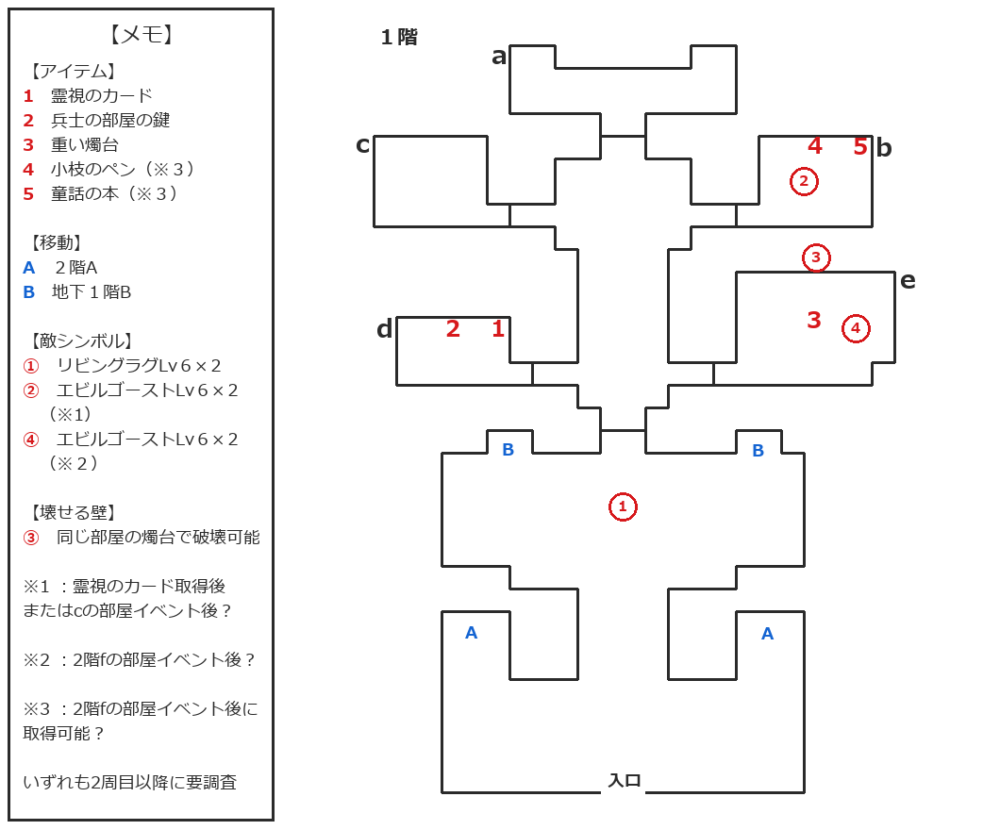
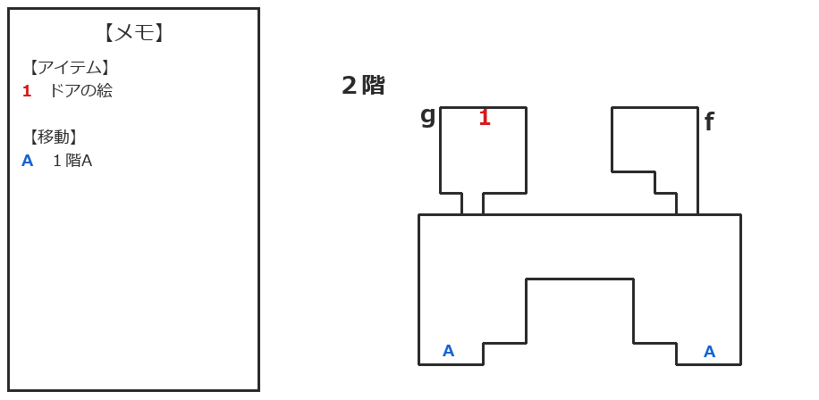

『Wizap! -ウィザップ 〜暗黒の王-』のプレイ日記9回目です。
前回は、エピソード4「幻の家」の1階で壁に埋まっていたオーブを砕き、2階へ進むのを阻んでいた強い力が消えたところで終了しました。
今回は、幻の家の2階部分を探索していきます。主人公はレベル5・役人、マクスターはレベル5・医師の状態から再開です。
幻の家1階・2階マップ
今回の探索内容を反映し、1階マップを更新しました。あわせて、新しく探索した2階部分のマップも掲載します。


掲載しているマップは、プレイしながら更新している途中版です。敵やアイテムの出現・取得条件には未確認の部分があるため、2周目以降に確認する予定です。
2階fの部屋と40年前の日記
2階へ上がり、まずは右上にあるfの部屋へ向かいます。
部屋の右側にある本棚を調べると、1冊だけ本を抜き取られた跡がありました。一方、左側の本棚には古い日記が残されていたので、読んでみましょうか。
日付は４０年前だそうです。
フォートリア954年6月1日
英雄の名の為に邪神の力を借りてしまった、その代償が何なのか見当がつかない。
6月2日
邪神の使者とその兵士達がこの家にやってきた、もはや逃れることは出来ない。
このまま彼らの要求を呑むしかないのだろうか。
6月4日
彼らは無の世界との入り口をここに作るつもりだ…
古の邪神ヴィサースをこの世界に呼び覚ますというのだ、何とかしなければ…。
6月5日
どうやら、無の世界の入り口には封印がされているらしい。
だが、彼らの私への要求とはその封印を解く事だったのだ。
私にはとてもできない…。
神よ、せめて私の命と引き換えに家族だけはお守りください…。
家主の声と時間を戻された部屋
日記を最後まで読むと、突然どこからか声が聞こえてきました。どうやら、前回会ったこの家の家主の声のようです。
家主によると、今いる部屋の時間を一時的に日記が書かれた頃へ戻したとのこと。ほんの少しの間だけですが、何かできることがあるはずだと教えてくれました。
日記の時へ戻したということは、この部屋だけ40年前の状態になったのでしょうか？
そういえば右側の本棚、先ほど調べた時は1冊抜き取られた跡がありましたね。
その1冊を読めるのでしょうか？
しかし、こちらは変わらず、1冊抜き取られた跡があるだけです。
それなら何をすれば……と思いながら、もう一度左側の本棚を調べると、今度は新しい日記が入っているとのこと。……こっちでしたかぁ。
未来を書き記すにはペンとインクが必要
新しい日記も40年前のものですが、書かれているのはフォートリア954年6月1日の内容まででした。時間を戻す前の日記にあった、その後の出来事はまだ書かれていません。
ここで「日記にこれから起こることを書き記しますか？」という選択肢が表示されました。翌日に邪神の使者と兵士たちが来ることを伝えれば、何か対策できるのかもしれません。
「はい」を選びましたが、「書くものを持っていません」と言われてしまいました。
……ここ、多分書斎ですよね！？ ペンか何か、その辺にないですか！？ 家主さん、どうやって日記を書いてたのぉ！？
…そんな思いが頭をよぎりますが、仕方ありません。何か書けるものを探しましょうか。
エビルゴースト2体と小枝のペン
屋敷内を探し始めると、1階eの部屋にレベル6のエビルゴースト2体が出現していました。戦闘に勝利し、1360の経験値を獲得しました。
この敵を確認したのは、2階fの部屋の時間が過去へ戻ったあとです。恐らく、部屋の時間が過去へ戻ることが出現条件だと思いますが、2周目以降にもう少し詳しく調べてみたいですね。
何か書くものを探しながら、1階bの部屋にある暖炉を調べてみます。以前、ここには炭のようなものがあると言われていたので確認すると、「小枝のペン」を入手できました。
小枝をペンとして使うそうです。炭のように文字を書けるのかと思い、さっそく2階fの部屋へ戻りましょう。
ところが、今度は「インクがなければ文字は書けません」と言われてしまいました。そっちもかぁ……。小枝のペンは暖炉から入手した物なので、炭のようなものだと思っていたのですが、燃えていなかったのでしょうか？
仕方ないので、今度はインクを探します。
童話の本と現れた少女
小枝のペンを入手したあと、1階bの部屋へ戻って本棚を調べると、「童話の本」を持ち出せるようになっていました。これも通常のアイテム欄には表示されないため、このエピソード限定のアイテムのようです。
ただ、その前に2階fの部屋の時間が過去へ戻るイベントも見ています。小枝のペンの入手と2階fの部屋のイベントのどちらか、もしくは両方が、童話の本を持ち出すための条件だったのでしょうか。
童話の本を持って2階fの部屋へ戻ると、少女が現れ、その本について話している途中で主人公の姿が消えました。
主人公の視点へ戻ると、今度は少女が消えています。過去へ戻っていた部屋の時間が、現在へ戻ってしまったのでしょうか？
目の前の本棚には、1冊だけ本を抜き取られたような跡があります。ここに童話の本を戻してみましょうか。
童話の本に書かれていた杖の作り方
本棚を調べると、童話の本を元へ戻すか選べるようになっていました。「はい」を選んで本を戻すと、改めて内容を読むことができます。
以前は黒ずんでいて途中までしか読めませんでしたが、今回は「ちゃんと杖は持ってきたのかね」と尋ねられた先の内容まで読めるようになっていました。
杖を持っていないなら、11日後の月がきれいな夜に山の1本の木から枝を取り、10日間祈り続けるように書かれています。それでも、10本作って1本できるかどうかのようです。
これが童話の本のすべてのようですが、この内容は何を示しているのでしょう。そして、インクはどこに……？
gの部屋でドアの絵を入手
その後、2階左上にあるgの部屋を確認すると、これまで閉まっていた扉の鍵が開いていました。
少女との会話か、童話の本を本棚へ戻したことが、扉を開くきっかけだったのでしょうか？
gの部屋を調べると、「ドアの絵」を入手しました。これも通常のアイテム欄には表示されない、エピソード限定のアイテムです。
長くなってきましたし、謎解きが続いて頭もオーバーヒート気味です。今回はここで中断しておきましょう。
消えていたラビットアイドル
宿屋へ戻ってセーブしたあと、メモを取るために装備を見直していると、「ラビットアイドル」が装備欄からもアイテム欄からも消えていることに気づきました。
前回終了時点の記録では装備していましたが、今回いつ消えたのかは全く分かりません。前回の終了から今回最後に宿屋で確認するまでの、どこかで失われたようです。
ラビットアイドルを失ったことを示すメッセージもなく、原因に心当たりもありません。そのうち何か分かればよいのですが……。
今回のまとめ
今回は、幻の家2階にあるfの部屋を探索し、40年前に書かれた古い日記を読みました。日記を読み終えると家主の声が聞こえ、部屋の時間が一時的に日記の頃へ戻りました。
過去の状態になった日記へ未来の出来事を書き記そうとしましたが、ペンとインクが必要とのこと。1階bの部屋で「小枝のペン」を入手したものの、インクはまだ見つかっていません。
さらに、1階bの部屋から童話の本を持ち出して2階へ戻ると少女が現れました。本を元の本棚へ戻すことで、以前は読めなかった杖の作り方まで確認できました。
その後、鍵が開いていたgの部屋で「ドアの絵」を入手。最後に宿屋で装備を確認すると、ラビットアイドルがいつの間にか消えていたことにも気づきました。原因はまだ分かっていません。
現在のステータス
※力強さから守護までは、「装備品による補正後/元の値」の形で表記しています。
- レベル：5
- 職業：役人
- 最大HP / 最大MP：95 / 212
- 力強さ：16/16
- 防衛力：15/15
- 知性：10/8
- 器用さ：9/5
- 素早さ：-4/3
- 生命力：3/3
- 守護：7/7
- 攻撃：28
- 防御：10
- 武器：グレイトソード
- 防具：レザースーツ、インナープレート、スケイルメイル
- 特殊：エルフリング、ドワーフリング
- 技能：アンチフリーズ、ジャンプ、スイミング
次回やること
次回は、「ドアの絵」の使い道と、日記へ文字を書くために必要なインクを探していきましょうか。
次回は作成後に追加予定です。
【作品について】
本ページで扱う作品名・各種権利は、各権利者に帰属します。
『Wizap! -ウィザップ 〜暗黒の王-』（スーパーファミコン）
©1994 ASCII CORPORATION
最終更新日：2026/08/21